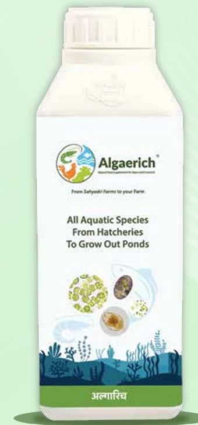
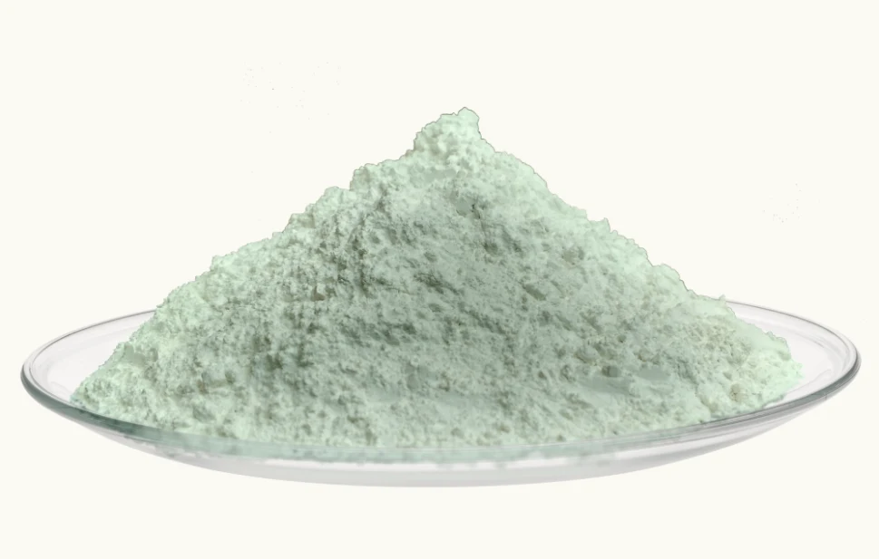

Microalgae cultivated in our own open-pond system, plus nano toxin binding for feed and aquaculture. Backed by Indian regulatory approvals and independent institutional trials.
Microalgae grow by photosynthesis. Every pond on our campus takes in carbon dioxide and gives back oxygen — so cultivation is not simply less harmful to the environment, it is actively capturing carbon.
CO₂
Absorbs carbon dioxide
Our open ponds take up CO₂ continuously as the biomass grows, reducing greenhouse gas load rather than adding to it.
O₂
Releases oxygen
Photosynthesis returns oxygen to the atmosphere across the full cultivation cycle.
LOOP
Farm to Bottle. Bottle to Farm.
The harvested biomass goes back out as a crop biostimulant and as aquaculture and animal nutrition — closing the loop on our own land.
01 / Sub-segment
Microalgae
Derived from Chlorella vulgaris and cultivated in an open-pond system, our microalgae solutions serve three segments — agriculture, aquaculture and the animal feed industry.
History of Microalgae — how the oldest organisms on earth became a modern ingredient platform.
Agriculture
AlgaVita™
India’s FCO-approved microalgae biostimulant
A Chlorella vulgaris based biostimulant for multi-stage crop support — used as a liquid from seed to fruit. AlgaVita™ supports root development, plant vigour, flowering and yield, and helps crops hold up under abiotic stress.
Targets abiotic stress including heat, salinity, drought and waterlogging.
Supports root development, plant vigour, flowering and yield across crop stages.
Cultivation ponds absorb carbon dioxide as the microalgae grow.
A differentiated biochemical profile versus seaweed extracts — including roughanic acid (7,10,13-hexadecatrienoic acid) at 6.86% and alpha-linolenic acid at 19.42% of total fatty acids, both generally absent or low in seaweed extracts.
Ferulic acid as the dominant phenolic antioxidant and catechin as the dominant flavonoid.
Trial reports and regulatory documentation available on request.
AlgaVita™ — responding to abiotic stress and climate change.

Aquaculture & animal feed
AlgaRich
Next-generation multivitamins and nutrients for aquaculture
An extract of naturally occurring green microalgae Chlorella vulgaris, supplying functional amino acids, polysaccharides, chlorophyll, antioxidants, vitamins, carotenoids and essential minerals. For all aquatic species, from hatcheries to grow-out ponds — and for poultry and cattle nutrition.
CAA Approved
Innate immunity
Supports innate immune response in aquatic species.
Feed conversion
Helps improve Feed Conversion Ratio (FCR).
Pond productivity
Boosts phytoplankton productivity in aquaculture ponds.
Segments
AquaculturePoultryCattleLiquid & FBD powder
Product details
Available as a liquid concentrate and as fluidized-bed-dried (FBD) powder.
Ask our team for the current specification sheet and CAA approval documentation.
Full product parameters
AlgaRich product parameters. Composition values refer to FBD powder; confirm the current specification with our team.
Feed additives developed for mycotoxin and heavy-metal management in animal feed and aquaculture.

Feed industry & aquaculture
PRETXI
Nano Toxin Binder
A nano-bio-technology based feed additive that combines citrus-derived bioactives with a hierarchical nanoporous framework — engineered for broad-spectrum mycotoxin and heavy-metal binding.
Engineered nanoporous framework
Developed from novel hierarchical nanoporous naturally occurring zeolite, engineered at the nano-scale.
Fortified with bioactives
Hepatoprotecting citrus bioactives — limonene, hesperidin, naringin and terpinene — support liver detoxification.
Surface area & porosity
386 ± 2 m²/g surface area with a uniform 5 ± 2 Å pore size for maximum adsorption contact.
Segments
Feed industryAquaculturePoultryLivestock
Applications & product details
Anionic and cationic nano-framework for broad-spectrum binding across major mycotoxin classes.
Applications across aquaculture, poultry and livestock feed systems.
Request application rates and technical guidance for your feed system.
Binding performance data
Adsorption efficiency across physiological pH conditions, at 50 ppb concentration.

.svg)